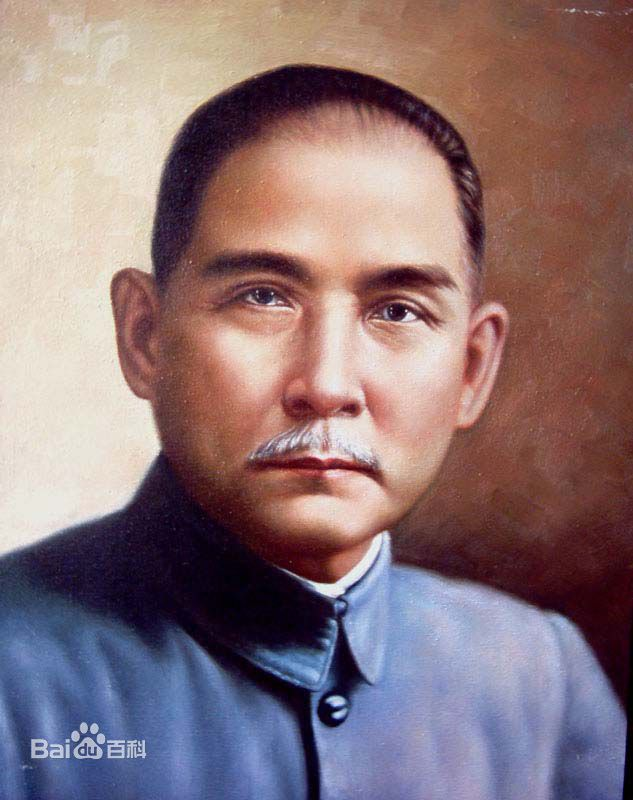
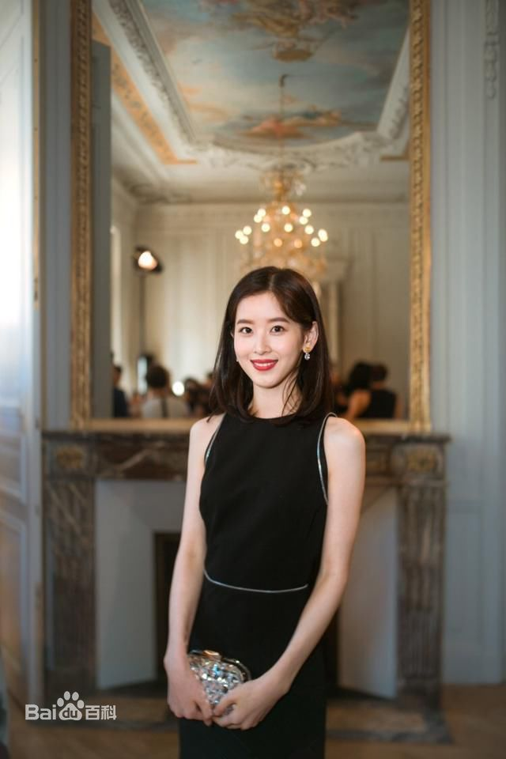
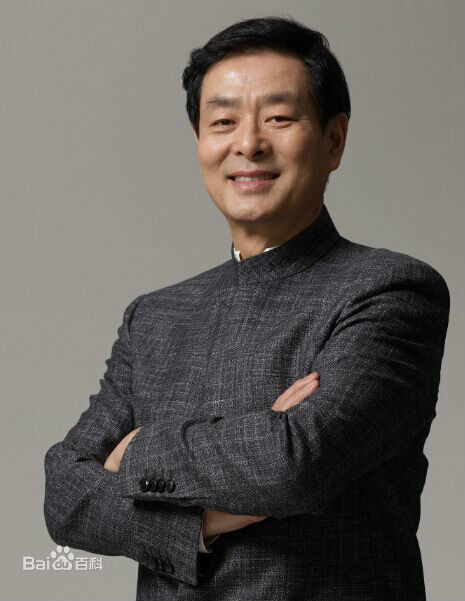

-

孙中山（1866年11月12日——1925年3月12日），名文，字载之，号日新，又号逸仙，幼名帝象，化名中山樵。 他是中国近代民族民主主义革命的开拓者，中国民主革命伟大先行者，中华民国和中国国民党的缔造者，三民主义的倡导者，创立《五权宪法》。
-

章泽天，1993年11月18日出生于南京，网络红人。2009年因一张手捧奶茶的照片走红网络，被称为“奶茶妹妹”。 2011年，章泽天就读清华大学。2014年4月14日，章泽天与刘强东的恋情被媒体曝光，引起网友广泛关注。2015年1月2日，章泽天主持的《燃烧吧大脑》在江苏卫视播出。
-

濮存昕，1953年7月31日出生在北京市东城区，汉族，祖籍南京市溧水区，中国男演员。 。1987年正式调入北京人民艺术剧院至今。现任中国戏剧家协会主席 、中国表演家协会副会长、中国电影家协会副会长，重庆大学客座教授，重庆大学电影学院硕士生导师，临汾红丝带学校名誉校长。